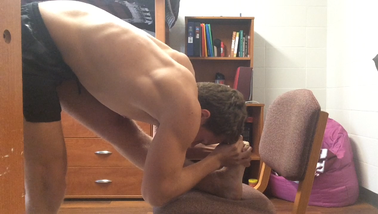
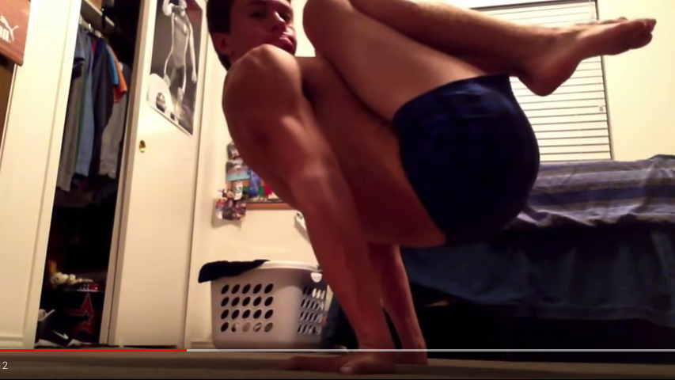
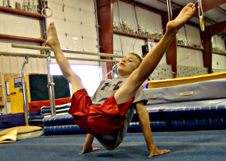
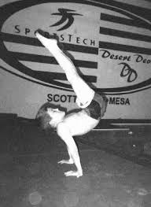
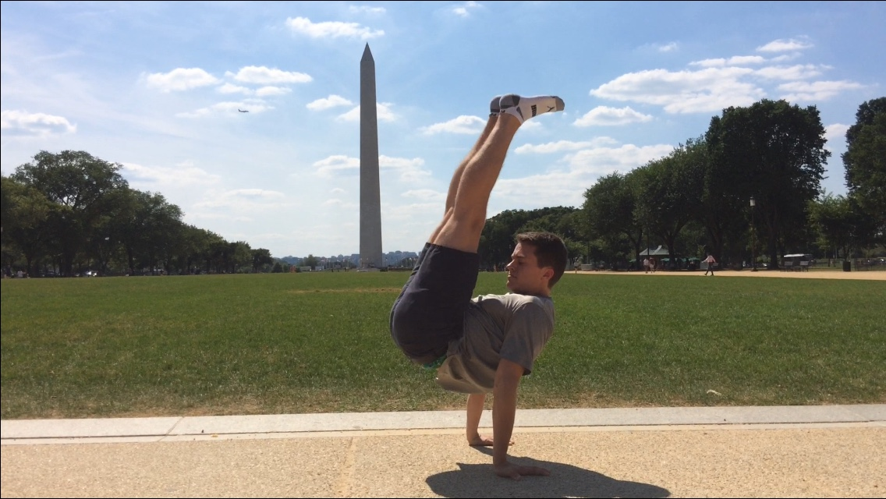
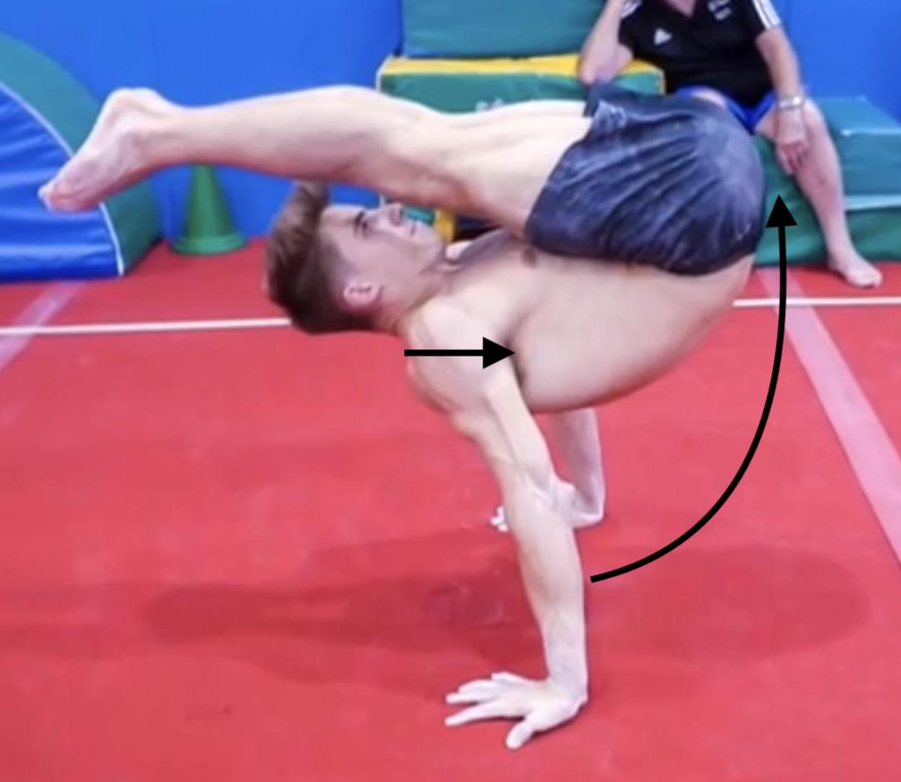

Started: 18 March 2017 / Finished: 22 March 2017 / Modified: 02 July 2020
This is based on the route that I took, as well as what I would have done differently, so take the following with a grain of salt. What works for me may not for you, and vice versa. Indirect and direct progressions and techniques will be discussed.
Note that this path will almost certainly lead to a solid 90° V-sit if you follow it correctly.
My Manna training has been sporadic. I ran competitively, so I would strength train for a while, take a break, strength, so on, all while running quite a bit (40-50 miles per week). I did not strength train consecutively for more than eight months during my Manna progressions. I am mentioning this to show that the Manna is achievable in a shorter amount of time than most think, but, then again, I started when I was 17, and I've never heard of a full-fledged adult achieving Manna, nor has Ido Portal (and he's been around the block).
I got my first 45° V-sit in January 2014. I didn't train Manna until February 2015, when I had my first real attempt. I stopped training, picked it back up in summer of 2015, stopped, then started to train it seriously again in August 2016. I attribute my ability to pick it back up to familiar motor patterns, such as this Chinese gymnast performing a full planche on rings after 15 years of little to no training. Strength may recede, but your body’s understanding of the position takes a long time to deteriorate.
Indirect Progression
A few different strength and mobility components are required:
Shoulder extension/retraction strength (SER)
Pike compression and mobility (PiCM)
Pancake compression and mobility (PaCM)
While there are other small things (wrists, balance), I see these three aspects as the main block in one’s training for Manna. With that said, reverse engineering Manna will not work. You cannot train all three of these separately, then expect to magically get it.
Shoulder Extension/Retraction (SER)
SER is something a lot of people lack due to it being an unused position. I used the following to get stronger in it:
Standing shoulder extension with weight. These can be done for reps (2x10-15) or for time (2x15-30s) at the end of training and should be a staple in Manna training. To progress, start with a wide grip at X weight, work to shoulder width (same width as your hands during Manna), then increase weight and go back to a wide grip. Rinse and repeat.
German hang to gain SER mobility. For perspective, I can slow dislocate from German hang (GH to regular hang). I worked up to an easy 5x30s on rings, with my body perpendicular to the floor.
Reverse plank and leans. My first progression in order to understand this was the table drill. I worked up at 5x30s to make sure I had a solid feeling and endurance in the position. From there, extend the legs to make a reverse plank. Fingers should be towards your feet or slightly turned out and arms perpendicular to the floor. Once you are strong in this position (3x30s), you can begin to lean back. You will not be able to lean much, but it will get better over time. SER should always be first priority, not the leaning. Hands will continue to face forward to stress the triceps and allow lean.
Pike Compression and Mobility (PiCM)
Pike mobility must be established before any meaningful progress in compression can occur. I approached PiC from one angle and PiM from two:
(PiC1) Leg lifts: I exclusively used these drills in between my sets of pike work.
(PiM1) Hamstrings: I used Emmet Louis's head-to-toe stretching protocol and got a cool stretch in the process (see below). This is not for the faint-hearted. Alternatively, you can just do basic pike work. Loaded progressive stretching works very well with this, as well as with pancake stretches.
(PiM2) Back: While doing any type of pike work (not H2T), attempt to arch the back.

Touching my head to toe
Pancake Compression and Mobility (PaCM)
This is a huge weak link in everyone I've met, excluding gymnasts and yoga practitioners. Most people have trouble sitting upright in a basic straddle, much less touching their chest to the ground in front of them. Kit Laughlin's Mastering the Pancake is an excellent resource, as are all of his other series.
(PaC1) Leg lifts: Same idea as PiC1. Sit in straddle, lean slightly forward, and lift the legs.
(PaM1) Pancake: I immediately started to use weight at my neck to get deeper, holding it 60s every time. Goal is chest and stomach to ground. In hindsight, adding weight immediately is probably not a good idea for the general population, so be careful if you choose this route.
Other Indirect Progressions
There are a few exercises others use for Manna that I didn't, but I will list them here:
Manna wall slides. These are great for improving SER strength without having to worry about balance or compression ability.
Spotted Manna. I personally did not think of these as that valuable, but I may not have been using them correctly. They are useful for getting used to the final position, and a competent spotter can adjust intensity as needed.
Weighted shoulder flex pulls. I used these occasionally for stretching, but never trained them regularly or seriously. Just another tool, and if you enjoy them, go for it.
Direct Progressions
The progressions are as follows and should all be done on the floor or parallel bars (preferably floor, as parallel bars for later progressions are much more difficult). Do not worry about hand/wrist positioning until it explicitly says to. The numbers in parentheses establish the order (same numbers means you can work the elements simultaneously) and recommended set x rep scheme, respectively, e.g. (1, 3x15-30s) means this is the first progression you should train and you should work up to 3 sets of 15-30s per set before moving on.
(DP1, 3x15-30s) L-sit and progressions (tuck, advanced tuck, full): This is to help establish basic PiCM and depression strength.
(DP2.1, 3x15-30s) Straddle L-sit and progressions (tuck, low full, full): This is to help establish basic PaCM. Legs are parallel to the floor, but a bit less than that is fine. These may need to be done on an elevated surface.
(DP2.2, 3x15s) Advanced L-sit and progressions: Starting with tuck, actively push the hips forward so they are in line with (or even in front of) your hands and your back is flat. You will need to work these on an elevated surface to allow leg clearance. Work up to 3x15s, extend the legs a bit, rinse and repeat. The scapulas should be relatively neutral or a bit retracted.
From here, the Manna-specific progressions begin. Start working with hands backwards to get accustomed to the position. I have only seen two or three people ever with a hands-forward Manna: two trained from a very young age and one is simply strong. Assume hands-forward Manna is impossible. There is not really a solid set x rep scheme to follow.
(DP3) Tuck V-sit/Manna: The idea is to push the hips forward, while lifting them up. See beginning of this video before I extend my legs.

Tuck Manna
(DP4) Straddle high V-sit: From the tuck V-sit/Manna, extend the legs out in either direction, looking like this. This is where PaCM comes into play.

Straddle high V-sit
(DP5) High V-sit: Once you develop strength in the straddle high V-sit, bring your legs together. This is where PiCM helps. Notice how I enter the final position: my legs are in a butterfly stretch, I lift my hips, then extend my legs while continuing to lift my hips.
Momentary high V-sit with slight straddle
(DP6) Manna: Your legs will continue to get higher and higher in both straddle V-sit and high V-sit until they are eventually parallel. Admittedly, I never achieved a true Manna (legs completely horizontal for 2 seconds). The closest I got was about 10 degrees away from parallel for 1-2 seconds, so pretty close.
My best Manna
(DP7) High Manna: One of the rarest moves in the world, but not many people train it. From Manna, lift your legs while maintaining hip height. Progressions and performances here:
Arevik Seyranyan's Manna sequence at the end of a handbalancing act. The link starts at the beginning of the sequence, but I strongly recommend watching the entire video.

High Manna performed by a young gymnast

High Manna with the Washington Monument in the background by yours truly
Technique
While most of it is strength and compression/mobility, there are certain techniques to help entering and holding it.
Balance became an issue once I got to the high V-sit progression, as evident in the high V-sit video. I used the cambered hand position to help grip the ground. I got forearm splits from falling backwards while my wrists were turned backwards… Ouch. I started to train it with a couch or mats behind me to catch myself if I lost balance and fell backwards.
Your primary focus is focusing on pushing the hips up and out. You can have all the PiCM in the world, but if your hips are not high enough, then your legs will not be parallel, thus no Manna. As hips elevate, your legs will come closer to parallel. You should also focus on pushing the shoulders forward while raising hips to help balance out the weight.

Directions of hip and shoulders while entering Manna
To enter the positions of (4), (5), and (6), it is best to start in a compressed butterfly stretch. This helps make compression significantly easier.
Last, but not least:
Pauly D says it, so do it
Suggestions
Do these when you are fresh and warmed-up. I did these after my warm-up and HS work, but before my primary strength work. Focus on warming up the wrists, shoulders, and pike and/or pancake mobility and compression.
Losing weight will actually help. While spot reduction is impossible, a lower weight at the same strength is better, and some may come off of the mid-section and thighs, allowing for better PiC. I am not “ripped” by any means, and think this would have helped a lot.
Training Plan
Now that the progressions and techniques have been laid out, training suggestions and schedules can be outlined. This schedule will be in addition to your normal training, not in replace of. The order of exercises is up to you.
The training will take place over two days: Day 1 (D1) and Day 2 (D2). They will be separated into blocks depending on what progression you are on.
Pre-DP3:
D1:
3 sets of L-sit variation, with at least one set of normal L-sit.
2 sets of pike mobility and compression. An example set would be 3x(30-60s standing pike, 10-15x pike compression leg lifts) or Emmet's H2T protocol followed by PiC leg lifts.
2 sets of pancake mobility and compression. An example set would be 3x(30-60s seated pancake, 10-15x PaC leg lifts).
Optional: 2 sets of reverse plank leans. Begin with table for 3-5x30s, then progress to reverse plank, then begin leaning.
D2:
3 sets of L-sit variation, with at least one set of normal L-sit.
2 sets of pike mobility and compression. An example set would be 2x(30-60s standing pike, 10-15x PiC leg lifts).
2 sets of pancake mobility and compression. An example set would be 2x(30-60s seated pancake, 10-15x PaC leg lifts).
2 sets of standing shoulder extension with weight (reps, sets of 10-15, or for time, sets of 15-30s). Use a dumbbell, light weight bar (not barbell), or weight plate.
Once you can hold L-sit, straddle L-sit, and advanced L-sit for 3 sets of 15-30s each, you can move on to post-DP3 schedule below. Note: I understand straddle L-sit is quite difficult for some to progress. If you are frustrated with your lack of progress, you may move on to DP3 with a poor straddle L (poor = not reaching 15-30s or lack of form), but should make that your main focus on the D2 L-sit sets below.
DP3 and after:
D1:
3 sets of DP3 or greater. Hands facing back.
2 sets of PiCM.
2 sets of PaCM.
D2:
3 sets of L-sit variation, with at least one set of advanced L-sit. If your body can handle it, you can do sets of DP3 instead.
2 sets of PiCM.
2 sets of PaCM.
2 sets of standing shoulder extension with weight OR 2 sets of reverse plank lean.
Wrists
Wrists strength and mobility are often a weak link in most people, especially when it comes to Manna training.
To keep my wrists strong and mobile, I did the following:
Wrist novel movements. These can be done whenever/wherever and takes about 3 minutes. I did these daily.
That's it. That's what got me to my best Manna in the image above. Feel free to contact me with any questions.
Understand that you will probably never achieve a true Manna, and if you do, it will be many years after starting this training. Even if you don't, a 90° V-sit is very likely and you will gain strength regardless.

{kind=link}
{kind=link}